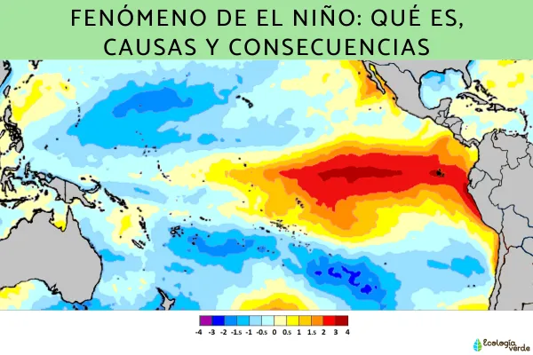
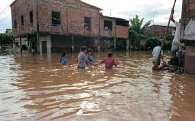

El Niño es un patrón climático natural en el océano Pacífico tropical que trae temperaturas de la superficie del mar más cálidas que el promedio y tiene una gran influencia en el clima en todo el mundo, afectando a miles de millones de personas.
Las aguas más cálidas de los océanos normalmente están confinadas al Pacífico occidental por los vientos que soplan de este a oeste, empujando las aguas más cálidas hacia Indonesia y Australia.
¿como crees que afecta el niño a Ecuador?
Las condiciones climáticas anormales de ENOS (El Niño Oscilación Sur) suelen durar períodos que van de doce a dieciocho meses. Durante estos períodos se desarrollan intensas lluvias, deslizamientos, inundaciones, sequías e incendios forestales en zonas distintas y distantes.
En Ecuador, a lo largo del siglo veinte se han producido numerosos fenómenos El Niño con efectos negativos. Los más notables, en orden de magnitud descendente y sin considerar el actual, han sido los de 1982-1983, 1957-1958 y1972-1973.Para el caso de 1982-1983, los daños ascendierona US$ 650 millones, con pérdidas importantes en los sectores productivos (63%), lainfraestructura (33%) y lossectores sociales (4%). Elmonto de tales daños originóefectos negativos en el crecimiento del PIB, disminuciónde exportaciones, aumentodel déficit fiscal y aumentode la inflación, entre otros,afectando el bienestar deamplios estratos de la población.
